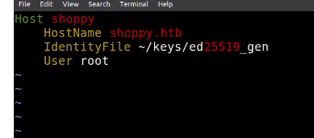

Nc transfer files
yoh can set ~/.ssh/config to diretly ssh to server via ssh $host

#!/usr/bin/env bash
# The hostname of your remote server.
host=myserver.com
# Create this folder if it does not exist: ~/.ssh
mkdir ~/.ssh
# Set the correct permissions (required)
chmod 700 ~/.ssh
# Generate an RSA key pair for identification with the remote server
ssh-keygen -t rsa
# Copy your public key to the remote server
cat ~/.ssh/id_rsa.pub | ssh $host 'cat >> ~/.ssh/authorized_keys'
# ssh is very strict about correct permissions
ssh $host 'chmod g-w,o-w ~; chmod 700 ~/.ssh; chmod 600 ~/.ssh/authorized_keys'
update-rc.d <[SERVICE]> enable
ftp file transfer
#!/bin/bash
groupadd ftpgroup
useradd -g ftpgroup -d /dev/null -s /etc ftpuser
pure-pw useradd offsec -u ftpuser -d /ftphome
pure-pw mkdb
cd /etc/pure-ftpd/auth/
ln -s ../conf/PureDB 60pdb
mkdir -p /ftphome
chown -R ftpuser:ftpgroup /ftphome/
systemctl restart pure-ftpd